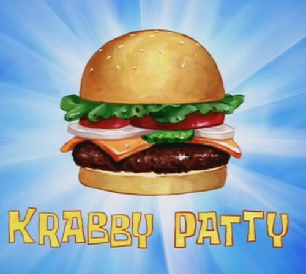

Krabby Patty

Description
The Krabby Patty is the Krusty Krab's
signature food item. It is a meatless hamburger of sorts made
from seaweed-sea buns, undersea vegetables, condiments, and a patty;
it can also be ordered with cheese. The ingredients of the patty itself are purposely kept secret.
Ingredients
The Secret Formula
- Flour
- Barnacles Shavings
- Salt
- Turmeric
- Love
- The "Secret Sauce"
- Chum
Toppings
- Sesame Seeds
- Bottom Bun
- Ketchup
- Mustard
- Mayonnaise
- Relish
- Sea Cheese
- Sea Pickles
- Sea Lettuce
- Sea Tomatoes
- Sea Onions
- Tartar Sauce
- Secret Sauce
- Chopped Love
- Top Bun
Steps
- Prepare your chum
- Form into patties and chill
- Fry, assemble, and serve